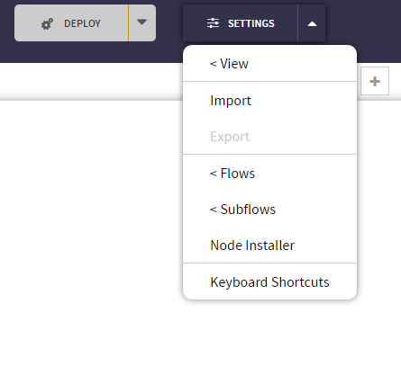

Telegram Bot Tutorials¶
Table of Contents
In this ChatFlow tutorial, we start by creating a simple echo for Telegram. We also program a simple inline bot for Telegram using the Yelp API. The following video shows the bot in action:
In addition, we explain the input and output for the Telegram In and Telegram out nodes.
- By the end of this tutorial, you will be able to:
- Connect a ChatFlow app to Telegram.
- Understand the input and output of the Telegram In and Telegram nodes
- Configure inline and inline geolocation requests.
A Simple Echo Bot¶
Before we build a Telegram Yelp Bot, let’s create a simple Echo bot to demonstrate how the Telegram connection works.
1. Create a New Bot and Token in Telegram¶
- Sent the
/newbotcommand to create a new bot by talking to the Bot Father

- Provide Bot Father with your bots name and username.
- Bot Father will then give you a HTTP API token to control your new bot. Copy it to your clipboard.
2. Create a New ChatFlow Application with Telegram Nodes¶
- Click on “Create new project” and create a new project from scratch.

- Enter a name and press “Create”.

- Your new app should appear in your apps list. Click on the app’s name to enter the Chatflow editor.
- To make your app nice and tidy, you can enable grid in the Settings/view menu.

Drag the Telegram In and Telegram Out nodes from the Node Library to your bot’s ChatFlow canvas and then connect them with a wire:

Note
If the Telegram In and Telegram Out nodes are not in your Node Library, click on Settings in the right hand corner. A drop down will open. Click on Node Installer:
In the Node Installer, search for Telegram. Click on the blue arrow to the right of Telegram to add the nodes into your palette:

3. Configure The Bot¶
- Double click the Telegram In Node, select “Add new selectbot-controller...”, and click the “Edit” button.
- Enter your “Telegram Bot Token” name under the “Name” field (ex. Echo Bot). Name your “Telegram Bot Token” to save it. This will allow that configuration to be used by other nodes.
- Paste the Token you copied from BotFather into the Token field. Click the “Add” button.
- Double click on the Telegram Out Node and select the “Echo Bot” Token. Click okay.
4. Deploy the Application¶
- Click on deploy button in the upper right hand corner to deploy your application.

After the application is deployed, your bot should be online. It will echo the message you sent to it.
Setting up Inline Bot¶
In Telegram, bots can either take direct messages (as demonstrated above) or be called using inline mentions. Inline bots have the following perks:
- Users can stay on current chat window instead of jumping back and forth between apps
- Inline bots give a more compact representation of results for fast browsing and selection
Set Inline Status¶
- Send the
/setinlinecommand to Bot Father. Then select your bot to activate inline status:
- Enter a place holder message. This message will appear every time someone types your bot’s name in the chat window and can exemplify the type message your bot can understand:

Set Inline Location Awareness¶
Telegram also allows bots to request your location in GPS coordinates.
- Send the
/setinlinegeocommand to Bot Father. - Select your bot to activate location request.
- To confirm, send
ENABLEDto Bot Father:
Now next time the bot is mentioned, it will request the user to share their GPS location.
Note
Desktop browser can still provide rough location coordinates!
Telegram In and Telegram Out Nodes¶
This section of the tutorial explains the output of the Telegram In node and the required formats for the Telegram Out node input.
Telegram In¶
The Telegram In node receives input from telegram and outputs the following msg:
1 2 3 4 5 6 7 8 9 10 11 12 13 14 15 16 17 18 | {payload: payload,
telegram: {
message: message,
user: message.from,
chat: message.chat,
type: message.type,
// optional fields:
location: message.location,
venue: message.location,
image: message.photo,
contact: message.contact
},
kitt: {
_session_id: message.from.id,
_user_id: message.from.username,
_timeout: 120
}
}
|
| Variable | Type | Description |
|---|---|---|
payload |
Various | contains information regarding text, location, venue, image, or contact |
telegram.message |
String | Contains message text |
telegram.user |
Object | Contains information about who the message is from |
telegram.chat |
String | The Chat ID (determined by Telegram) |
telegram.type |
String | The type of message |
telegram.location |
Object | Contains Latitude and Longitude Information |
telegram.venue |
Object | Contains information about a venue such as Name, Location, etc. |
telegram.image |
String | URL to Image |
telegram.contact |
Object | Contains information about a Contact |
kitt |
Object | Used by the Router node for session management and timeout |
Note
Location, venue, image, and contact are optional fields and will be populated if the original message from telegram contained these fields.
Telegram Out¶
This node receives message by wires and sends to telegram bot. It expects message with the following properties:
1 2 3 4 5 6 | msg = {payload: payload,
telegram: {user: user,
chat: chat,
type: type
}
}
|
To have your bot send a text message in Telegram, format your msg in the following manner:
1 2 3 4 5 6 | msg = {payload: "Hello there",
telegram: {
user: {id: "user-id"},
type: "text"
}
}
|
Note
You can also set telegram.type to either “text” or “null”
To have your bot send a location in Telegram, format your msg in the following manner:
1 2 3 4 5 6 7 8 9 | msg = {payload: {
latitude: 1.1111,
longitude: 1.1111
},
telegram: {
user: {id: "user-id"},
type: "location"
}
}
|
To have your bot send a venue in Telegram, format your msg in the following manner:
1 2 3 4 5 6 7 8 9 10 11 12 | msg = {payload: {
title: "venue title",
address: "venue address",
id: "unique id",
latitude: 1.1111,
longitude: 1.1111
},
telegram: {
user: {id: "user-id"},
type: "location"
}
}
|
To have your bot send an image in Telegram, format your msg in the following manner:
To have your bot send a sticker in Telegram, formate your msg in the following manner:
1 2 3 4 5 6 7 | msg = {
payload: "http://server.com/sticker.png",
telegram: {
user: {id: "user-id"},
type: "sticker"
}
}
|
To have your bot respond to an inline inquery, formate your msg in the following manner:
1 2 3 4 5 6 7 | msg = {
payload: InlineQueryResults,
telegram: {
user: {id: "user-id"},
type: "inline_query"
}
}
|
An Yelp Inline Bot¶
We want to program an inline Yelp bot that supports the following two inline mention modes:
- “seafood near seattle” –> Bot will search Yelp seafood near Seattle.
- “seafood” –> Bot will search Yelp seafood using phone’s GPS location.
This bot will not accept direct messages.
The following is a demo of the end result:
The Setup¶
1. Import the “Telegram - Yelp Inline Bot” Application into Chatflow¶
Import the application to ChatFlow by either:
- Download the
JSONfile for our application and import the project on the applications page, or, - Use the “Telegram - Yelp Inline Bot” sample application under “Use a Sample Project” when clicking “CREATE NEW APP” on the applications page.
The following is a screenshot of the flow.
{kind=link}
Feel free to import this bot into your own project and play with it.
2. Acquire the Bot Token and Yelp API Credentials¶
In order for the bot to work, you’ll need:
- Bot access token (already covered in A Simple Echo Bot )
- Yelp app credentials, including Consumer Key, Consumer Secret, Token and Token Secret.
The Flow¶
In this flow, the bot only accepts inline mentions and does not accept direct
messages. We assumed the input will have a certain structure and can be captured
by the Simple NLU for Inline Query node:
1 2 3 4 5 6 7 8 9 10 11 12 13 14 15 16 17 18 19 20 21 22 23 24 25 26 27 28 29 | var query = msg.payload.trim();
if (!query)
// don't output empty msg
return;
var splits = query.split(" near ");
var split_len = splits.length;
if (!msg.NLU) {
msg.NLU = {};
}
if (split_len == 1) {
msg.NLU.business = splits[0];
} else {
// "chinese food near downtown seattle"
msg.NLU.business = splits[0];
msg.NLU.address = splits[1];
}
try {
if (msg.telegram.inline_query.location.latitude) {
// we got GPS coordinates from mobile
msg.NLU.ll = msg.telegram.inline_query.location.latitude+","+
msg.telegram.inline_query.location.longitude;
}
} catch (err) {}
return msg;
|
Once we get the business type and address or ll (latitude & longitude),
we can go ahead and search Yelp. The final result is sent through the
Send Result node:
1 2 3 4 5 6 7 8 9 10 11 12 13 14 15 16 17 18 19 20 21 22 23 24 25 26 27 28 29 30 31 32 33 34 35 36 | var results = msg.payload.businesses;
if (results.length > 0) {
var responses = [];
for (var i=0; i<results.length; i++) {
var result = results[i];
var categories = [];
for (var j=0; j<result.categories.length; j++) {
categories.push(result.categories[j][0]);
}
responses.push({
type: "venue",
id: result.id,
title: result.name + " (" + categories.join(", ") + ")",
thumb_url: result.image_url,
latitude: result.location.coordinate.latitude,
longitude: result.location.coordinate.longitude,
address: result.review_count + " reviews. Rating: " + result.rating + ". \n" +
result.location.display_address.join(" ")
});
}
msg.payload = responses;
return msg;
} else {
msg.payload = [{
type: "article",
id: "no-result",
title: "No Yelp Result Found",
input_message_content: {
message_text: 'e.g., "dinner near downtown Chicago"'
},
description: 'e.g., "dinner near downtown Chicago"'
}];
return msg;
}
|
The result, encoded in msg.payload, is a list of venues that will be sent
via the Telegram SendVenue method.
This Yelp Bot has a simplistic understanding of human language. In addition, it does not support direct messages. To learn how to expand its capacities, take a look at the full tutorial of Extended Example: A Conversational Yelp Bot.